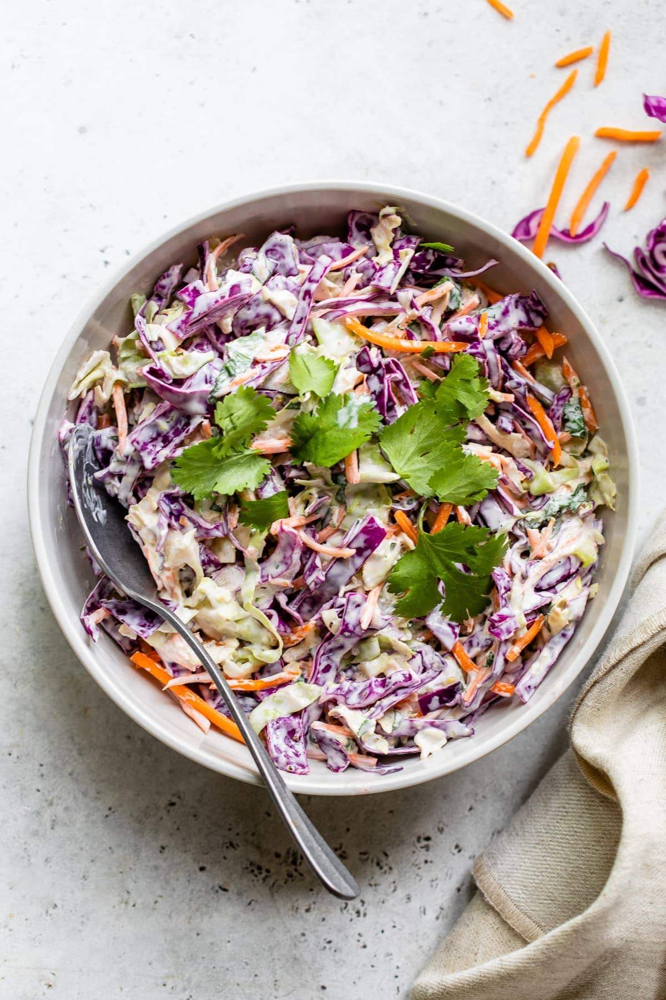

Fish Taco Slaw

A bowl of taco slaw
This is a recent addition to our Taco Tuesday repetoir. I try to keep this simple, and I dial in the
final flavor with small adjustments to the sauce.
Ingredients
- Cucumber
- Cabbage
- Carrot
- Apple
- Yogurt
- Lemon
- Honey
- Olive Oil
- Salt
- Pepper
Steps
- Mix yogurt, lemon, olive oil, and honey.
- Chop cucumber, cabbage, carrot, and apple.
- Combine chopped fruits and veggies in a bowl and add yogurt sauce, salt, and pepper
Back Home